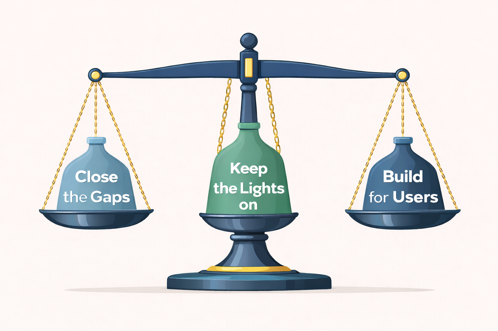

The Viedoc Experience — Berlin
Lina Gaggi — Product Management
2025 In Review
Focused Strategy
Predictable Delivery

Closer to Real-World Workflows

Manual medical coding was:
From 4.90
From 4.91
Native repeating item group support across the Viedoc Suite
Released in 4.92 (Feb 2026)

Delivery Cadence
The Columns
The Swimlanes
Future releases, release content, and prioritization are subject to change without notice.
This only works if we do it together.
Scan to share your feedback